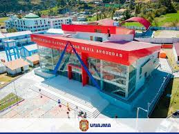

Soy de Perú, específicamente de la ciudad de Abancay.


üéì Estudio en la Universidad Nacional Jos√© Mar√≠a Arguedas.
üìò Actualmente curso el quinto ciclo de mi carrera universitaria.
üíª Esta p√°gina web ha sido desarrollada como parte de un trabajo del curso de Programaci√≥n Web.